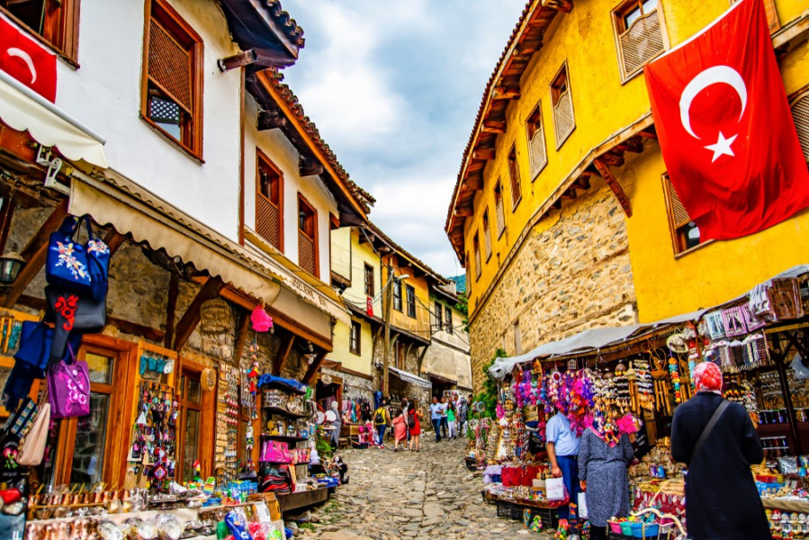
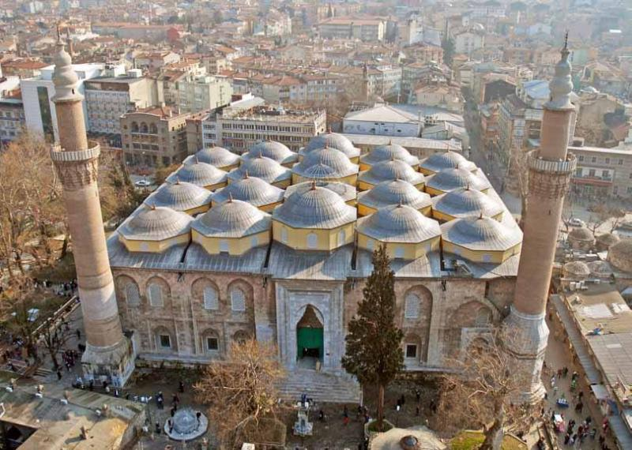
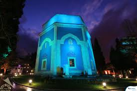
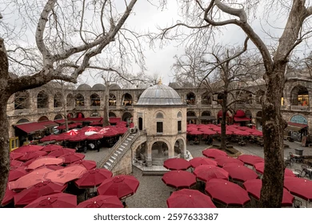

Bursa'nın Kültürel Mirası
UNESCO değerleri, tarihsel yapılar ve şehir kimliğini oluşturan semboller
Bursaspor ⚽
Bursaspor, 1963 yılında kurulmuş ve Bursa'nın en güçlü şehir simgelerinden biri olmuştur. 2009-2010 sezonundaki Süper Lig şampiyonluğu, kulübü Türk futbol tarihinde özel bir yere taşımıştır. Yeşil-beyaz renkleri, şehir aidiyetinin önemli bir parçasıdır.
Kuruluş ve Tarihçe
Kuruluş: 1963 yılında Acar İdman Yurdu, Akınspor, Demirçelikspor, İstiklal ve Pınarspor takımlarının birleşmesiyle kurulmuştur.
Renkler ve Amblem: Renklerini Uludağ'ın karından (beyaz) ve Bursa Ovası'nın yeşilinden alır. Amblemdeki 5 yıldız, kulübü oluşturan 5 kurucu takımı temsil eder.
Timsah Lakabı: 1992 yılında bir belgeselden esinlenilerek timsah sembolü benimsenmiş ve meşhur "Timsah Yürüyüşü" gol sevinci doğmuştur.
Cumalıkızık

Osmanlı sivil mimarisini koruyan Cumalıkızık, dar taş sokakları ve tarihi evleriyle Bursa'nın en değerli kültürel miras alanlarından biridir. Köy, UNESCO Dünya Mirası listesine alınmıştır.
Ulu Camii

1399 yılında tamamlanan Ulu Camii, çok kubbeli yapısı ve hat sanatının seçkin örnekleriyle Bursa'nın dini ve mimari hafızasında merkezi bir yere sahiptir.
Yeşil Türbe ve Yeşil Külliye

Çelebi Mehmet döneminin önemli eserleri olan bu yapılar, çini süslemeleri ve zarif mimarileriyle erken Osmanlı sanat anlayışını günümüze taşımaktadır.
Koza Han

İpek Yolu ticaretinin Bursa'daki önemli merkezlerinden biri olan Koza Han, Osmanlı döneminden günümüze uzanan ticari mirası temsil eder. Han, bugün de ipek kültürünü yaşatan canlı bir noktadır.